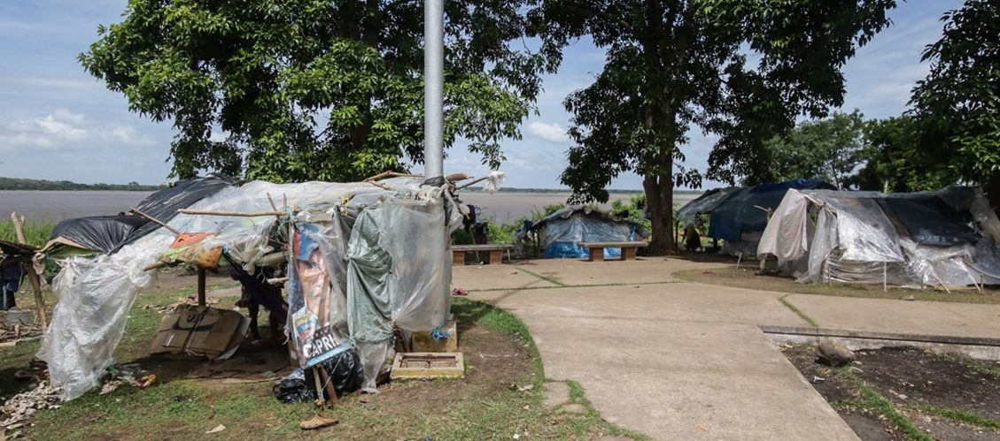
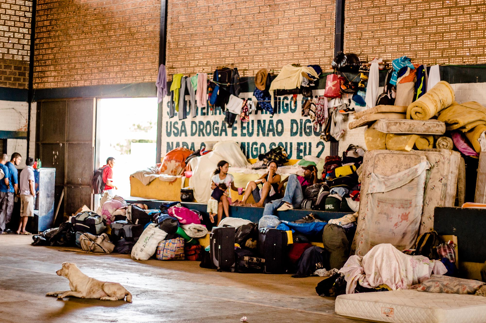
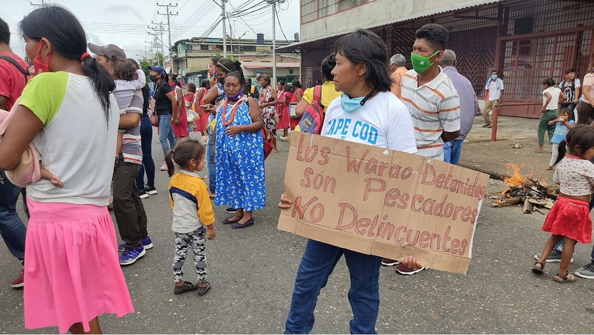

The Warao indigenous community in Venezuela have suffered widespread
devastation on all fronts, from COVID-19 to the country’s political
instability, the Warao community has also been affected by the
destruction of their homeland, the Orinoco Delta river.
Originally residing on the banks of the Orinoco in the northeast of
Venezuela, the Warao people’s livelihood has been drastically affected
by the political and humanitarian crisis affecting Venezuela. This has
driven many indigenous communities out of their homelands, and into
neighbouring countries, with the large majority migrating to Brazil.
Those who remain are caught in human trafficking and modern day slavery
practices, which are uncontrolled by the local government. However,
there is evidence that even before the crisis, these communities were
already being affected by land devastation and scarcity of natural resources.

Warao people have resorted to migrate from Venezuela to Brazil. They
have left their homeland due to a humanitarian crisis which threatens
their health and livelihood. | William Urdaneta / Correo del Caroni.
The current crisis
The exodus of indigenous people from their ancestral homes predates
the current political crisis and COVID-19 pandemic. In the last 20
years, Venezuela has endured a health and food crisis, not to mention
a concerning rise in crime, which has been causing many to leave their
homeland over the last two decades.
The destruction of the local ecosystem by industrial activities has
also been a major factor in progressively affecting the livelihoods
of these communities. The Warao people have for centuries lived in
wooden houses raised over the Orinoco river, one of the largest rivers
in South America, living off the land according to their traditions.
The re-emergence of poverty related illnesses due to the humanitarian
emergency in Venezuela has made the Warao people one of the most
vulnerable communities in Venezuela. The COVID-19 pandemic has
exacerbated this situation, by further pushing these communities in
an exodus to Brazil due to the lack of food and health resources.
The devastation of the Orinoco Delta ecosystem
The Warao people have (for decades) experienced a substantial decline
in fishing due to the activities of certain industries, which have
diverted rivers for shipping purposes and the mining industry, this
was reported around 1990’s.
What’s more, from as early as the 1990’s, there have been concerns
over illegal fishing by fishermen of nearby cities on protected lands,
further contributing to the decrease of the indigenous communities’
food supply.
This has pushed these communities to travel into local cities in order
to make a living, selling artisan crafts or often begging. Then, with
the arrival of the current socialist regime in the early 2000’s, these
communities were eventually completely abandoned.
As recently as 2018, Warao families have been arriving at the Brazilian
border in precarious health conditions, as reported by local volunteers,
but Brazil is struggling to take care of the vast number of migrants.
It has been difficult for Brazilian authorities to keep adequate
records these migrations, as it is estimated that since 2002, the
indigenous community chiefs have lost control of their own birth and
death certificate records in Venezuela, which has resulted in a large
proportion of individuals to be undocumented.

Warao people Shelter in Boa Vista, the Roraima state capital, in northern Brazil. | Amazôn
The scarcity of natural resources and human rights violations of Warao people
The destruction of the Orinoco Delta ecosystem predates the current
humanitarian crisis. From as early as 2004, the surrounding areas,
such as the Turuépano National Park, where these communities lived off
the local wildlife, have been under threat. The illegal hunting of wild
birds, such as Muscovy ducks, overfishing of snails and oysters, have
affected the Warao people, who need these resources for survival.
Another overwhelming threat to indigenous communities in Venezuela and
the local ecosystem, are the commercial activities of the oil and gas
industry, brought upon by an economy over-reliant on fossil fuels.
Venezuelan people who fight for the wellbeing and survival of indigenous
communities have claimed that the biggest threat is the ‘State’.
In the 1960’s, the government closed and diverted the waters of the
Caño Manamo basin, which led to the acidification and salinization of
the surrounding land and water, costing the lives of 5,000 members of
the Warao community.
As a result of years of deprivation, the WHO has reported that
Venezuela has one of the lowest rates of basic health support,
evidencing the need for sanitary campaigns and programmes, in
particular deworming campaigns, which are essential for improving
children’s health and nutrition.
‘Venezuela has one of the lowest rates of basic health support.’
More recently, there have been numerous reports of modern slavery
near the Orinoco Delta, due to connections with the mining activities
in the area. This form of exploitation is carried out through a practice
called ‘debt slavery’; in which an individual becomes contracted to
carry out work until their debt can be paid off.
It soon becomes clear, however, that the individual will not be able
to pay the debt, as large sums of interest are added as part of the
payment. 74% of women, 26% of men, and 25% of children from indigenous
communities fall victim of modern slavery. Indigenous communities,
in particular its younger members, have also been exploited through
human trafficking, including sex trafficking.
On the streets of Ciudad Guayana, for example, in the Bolívar State of
Venezuela, there have been numerous reports of indigenous women
being kidnapped for prostitution purposes, with very little able to be
done for their safety or protection. It is also not uncommon for
individuals to fall victim of human trafficking while en route to
Brazil, given the lack of regulatory measures and safety of the journey.
‘Indigenous communities, in particular its younger members, have also
been exploited through human trafficking.’

Members of the Warao community protest injustice in the streets of
Tucupita in Delta Amacuro. A group of Warao have been detained in
suspicion of human trafficking, while member s of their community
protest that they are in fact the victims. They alleged 70 people of
the warao community in this area were victims of kidnapping|. Kape
Kape / Correo Caroni.
Getting sustainability wrong
During the last 20 years, local organisations have been putting forward
campaigns to raise environmental awareness within the Warao population.
Despite their connections with the land, these communities were accused
of unsustainable activities, including overhunting, which may have
led to a decrease in the local manatee population and local wildlife.
The Warao people themselves have also been criticized for the burning
of vegetation often resulting in wildfires. In perspective the impact
of these communities on the environment is relatively minimal in
comparison to the large-scale contamination and devastation by global
oil corporations in Venezuela, such as spillovers into the Carribean
as recent as 2020.
However, campaigns to educate the Warao people and other indigenous
communities have been made by local NGOs, they are, paradoxically, often
funded by oil companies such as Chevron. The notion of educating
indigenous people on how to take care of the local environment, where
they have been living for centuries, seems counterproductive,
particularly coming from an oil company.
‘Local NGOs are, paradoxically, often funded by oil companies.’
Unsurprisingly, the ecosystem of The Orinoco Delta has become
threatened ever since the arrival of large-scale operations by oil and
gas companies within the Turuépano National Park; it is well known
that these extraction activities pollute and destroy the land in ways
incomparable to the impact that indigenous communities have.
Venezuela is in desperate need of better sanitary and safety measures
to protect its indigenous people, as well as all its population who
have found themselves fleeing their homeland. Venezuela should also
look to put control on the environmental damage produced by years of
an aggressive oil and mining industry.
The most recent oil spill in December 2020 demonstrates the setbacks
of an environmental disaster caused by the industry with no concerns
over affecting the wildlife and its people.
Finally, conserving the legacy of indigenous communities is an
important task which involves the conservation of the environment.
Indigenous people have the right to govern themselves and the land
they protect and live off of without interference or guidance of oil
corporations who perpetrate the devastation of the very same land.
Featured Image: Yolanda Simone | Flickr | Unsplash
Burghouts J., Nogal B., Uriepero A., et al. (2017) ‘Childhood Vaccine Acceptance and Refusal among Warao Amerindian Caregivers in Venezuela; A Qualitative Approach.’
PLOS One. Volume 12, Issue 1.
Mejias-Carpio I., Paniz-Mondolfi A., Mogollon-Rodriguez, et al. (2021) Assessment of Malnutrition and Intestinal Parasitoses in the Context of Crisis-Hit Venezuela: A Policy Case Study.
Frontiers in Sustainable Food Systems. Volume 5, Article 643801.